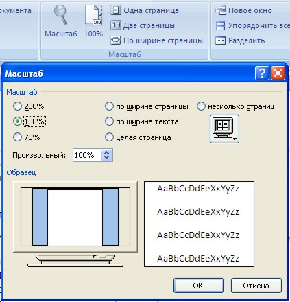
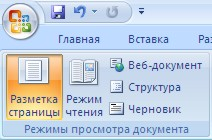
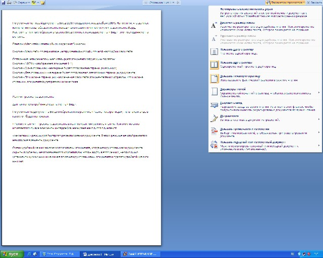
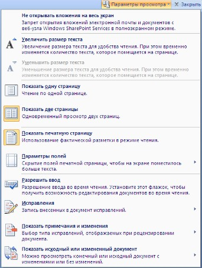
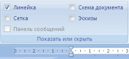
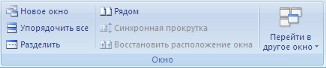
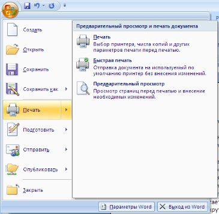
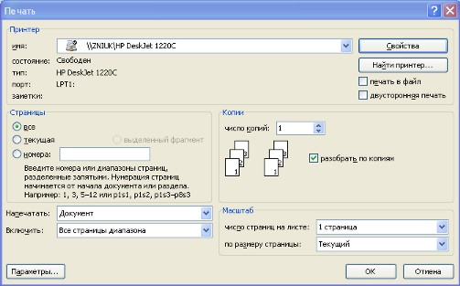
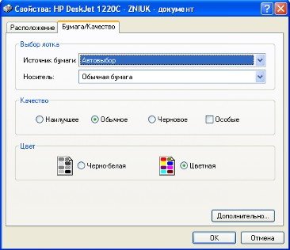
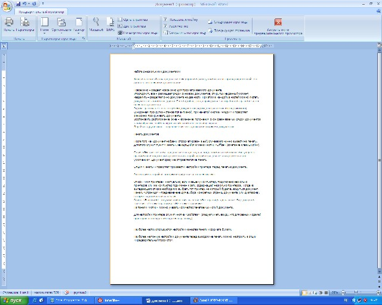

<< предыдущая лекция
|
Лекция 8. Вид и печать
документа
|
следующая лекция >>
|
По умолчанию новый документ в Word 2007 создается с масштабом 100%. Напомним, что движок изменения масштаба документа находится в правом нижнем углу окна документа Word. Настроить нужным образом вид окна Ворд можно с помощью ленты "Вид" - это последняя лента в строке.

Панель "Масштаб" ленты "Вид"
содержит 5 кнопок.
Кнопка "Масштаб" содержит все инструменты быстрой и точной
настройки масштаба.
Остальные четыре кнопки масштабируют документ
следующим образом:
· Кнопка "100%" - отображает документ 1:1;
·
Кнопка
"Одна страница" -
на экране будет отображена страница целиком;
·
Кнопка
"Две страницы" -
на экране будет отображено две полных страницы документа;
·
Кнопка
"По ширине страницы" - изменение масштаба документа таким образом, что
ширина страницы документа будет равна ширине окна.
1.
Режим просмотра
документа
Данная панель крайняя слева на ленте "Вид".

По умолчанию документ в Word отображается в режиме "Разметка
страницы", т.е. в таком виде в каком он будет напечатан.
"Режим чтения" - просмотр документа в полноэкранном режиме чтения. При этом из окна исчезают почти все элементы интерфейса, на экране находится один текст и несколько кнопок управления.

Кнопка "Параметры просмотра" служит для настройки параметров просмотра
документа. При ее нажатии появляется окно с дополнительными возможностями
настройки.  "Черновик" - режим для быстрого редактирования документа. В этом
режиме не отображаются некоторые элементы документа. Существует еще один очень удобный режим работы во
время подготовки документа, когда между страницами документа скрыты пробелы и
не показываются колонтитулы. Чтобы войти в этот режим, необходимо установить
курсор мыши на синее поле между страницами документа и сделать двойной щелчок
мышью. 2.
Дополнительные элементы  На панели "Показать или скрыть" путем
установки/снятия соответствующих флажков можно показывать/скрывать
дополнительные элементы окна: ·
Линейка - служит для быстрой настройки полей,
отступов, табуляции (очень рекомендую включить); ·
Сетка - помогает форматировать документ,
содержащий таблицы и рисунки; ·
Схема
документа -
используется при работе с большими документами; ·
Эскизы - просмотр общего вида страниц всего
документа 3.
Работа с несколькими
документами Кнопки
панели "Окно" предназначены упростить работу пользователя при
одновременной его работе с несколькими документами.  ·
Новое
окно -
создает новое окно для просматриваемого документа; ·
Упорядочить
все -
размещает рядом окна всех документов, открытых на данный момент; ·
Разделить - разделяет окно документа на две части. При
этом в каждой из частей можно листать документ независимо от другой. Очень
удобно, когда приходится часто работать в разных частях большого документа; ·
Рядом - располагает окна открытых документов
рядом для сравнения их содержимого; ·
Синхронная
прокрутка -
становится активной, при нажатой кнопке "Рядом" и позволяет синхронно
прокручивать документы; ·
Восстановить
расположение окна -
изменение положения окон сравниваемых рядом документов таким образом, чтобы
каждое из них занимало половину экрана; ·
Перейти
в другое окно -
переключение между окнами открытых документов. 4.
Печать документов После
того как документ набран и отформатирован в 99% случаев его нужно вывести на
печать. Для этого служит пункт "Печать", находящийся в меню кнопки
"Office" (сочетание клавиш Ctrl+P).  Опция "Быстрая печать" - предназначена для случая, когда
пользователь полностью уверен в правильности подготовки документа и настройках
принтера для печати документа "по умолчанию". Документ сразу же
отправляется на печать. Опция "Печать" - позволяет произвести настройки принтера
перед печатью документа. Рассмотрим
настройки, которыми придется часто пользоваться.  Список "Имя принтера" - актуально, если к вашему компьютеру
подключено несколько принтеров или же компьютер подключен к сети, содержащей
несколько принтеров. Тогда из выпадающего списка необходимо выбрать тот
принтер, на который будет выводиться документ. Панель "Страница" - предназначена для выбора конкретных
страниц документа (или диапазона), которые надо вывести на печать. Список "Включить" - по умолчанию стоит значение "Все
страницы диапазона". Еще доступны значения: "Четные страницы";
"Нечетные страницы". На панели "Копии" можно указать
количество печатаемых копий документа. Для
настройки принтера служит кнопка "Свойства" (следует иметь
ввиду, что для разных моделей принтеров окно будет выглядеть по-разному).  Часто используются настройки качества печати и формата
бумаги. Наиболее
же тонкие настройки документа перед выводом на печать можно настроить в опции
"Предварительный просмотр".  Здесь наглядно показано как будет выглядеть документ
на бумаге. С большинством инструментов настройки мы уже знакомы.
Отметим только кнопку "Сократить на страницу". С ее помощью
можно несколько ужать документ путем некоторого уменьшения размеров и
интервалов текста. Делается это с целью убрать последнюю страницу документа,
если она содержит всего несколько строк текста.